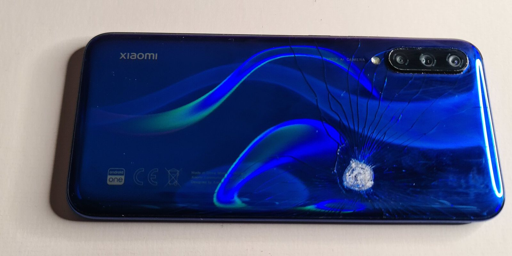

Личный бренд в Telegram: с чего начать и на что смотреть

Зачем вообще личный бренд в Telegram
Telegram в России стал не просто мессенджером, а рабочей площадкой: здесь ищут подрядчиков, покупают услуги, находят клиентов и партнёров. Личный бренд в канале или через личный профиль решает конкретные задачи — снижает стоимость привлечения клиента, помогает продавать без «холодных» звонков и создаёт запас доверия на годы вперёд. В отличие от соцсетей с алгоритмами, здесь ваша аудитория — это те, кто осознанно подписался и читает.
Формат: канал, профиль или закрытый клуб
- Личный профиль — минимум усилий, но нет контента и истории. Подходит как визитка с описанием и ссылкой.
- Публичный канал — основной формат для эксперта. Показывает компетенцию, собирает аудиторию, работает как воронка.
- Закрытый канал или чат — платная подписка либо клуб по интересам. Имеет смысл, когда есть готовая аудитория и понятная ценность.
- Комбинация — канал для контента, личные сообщения для сделок. Чаще всего работает лучше всего.
Контент: что реально читают
Аудитория в Telegram ценит плотность смысла. Работают:
- разборы кейсов с цифрами и выводами;
- личный опыт — ошибки, решения, результаты;
- полезные подборки инструментов и сервисов;
- короткие наблюдения по нише;
- ответы на вопросы подписчиков.
Не работает пересказ новостей и общие мотивационные посты. Ритм — 3–5 публикаций в неделю; важнее регулярность, чем объём.
Оформление и техническая часть
- Понятное название и описание: кто вы, чем полезны, что человек получит.
- Аватар с лицом — для личного бренда это принципиально.
- Закреплённое сообщение с навигацией или оффером.
- Хештеги для рубрик, если контент разнородный.
- Ссылка на канал во всех профилях и подписях.
Продвижение без бюджета и с ним
Бесплатные механики: гостевые посты и взаимные упоминания с каналами схожей тематики, ответы в тематических чатах, публикации в профильных сообществах. Платные: закупка рекламы в каналах ниши, посевы, таргет на смежные аудитории. На старте достаточно 10–15 тысяч рублей, чтобы протестировать 3–4 канала и понять, откуда приходят живые подписчики, а не боты. Всегда проверяйте статистику канала перед закупкой: охваты, вовлечённость, географию.
Монетизация и типичные ошибки
Источники дохода: услуги и консультации, продажа курсов и гайдов, платная подписка, партнёрские программы, реклама. Главная ошибка новичков — гнаться за количеством подписчиков вместо качества аудитории. Тысяча человек, которые вам доверяют, приносит больше, чем десять тысяч случайных. Вторая ошибка — нерегулярность: канал, заброшенный на месяц, теряет охваты. Третья — отсутствие призыва к действию: читатель не догадается написать вам сам.
Личный бренд в Telegram — это накопительный актив. Первые месяцы он почти не даёт отдачи, но при системной работе через полгода-год канал начинает приводить клиентов и партнёров без дополнительных вложений. Начните с честного описания своей экспертизы и одного полезного поста в неделю — этого достаточно, чтобы проверить формат на себе.
Ссылки на маркетплейсы и сервисы ведут на проверенные предложения, для вас цена не меняется.
Найти на Маркете →